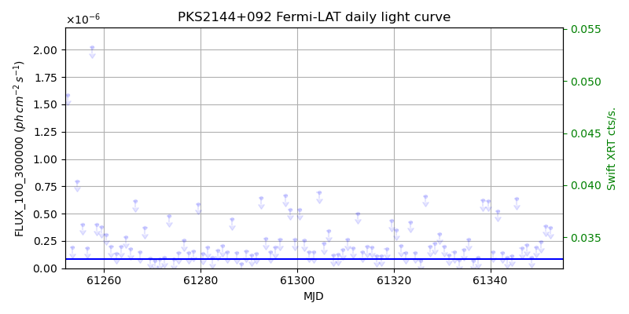
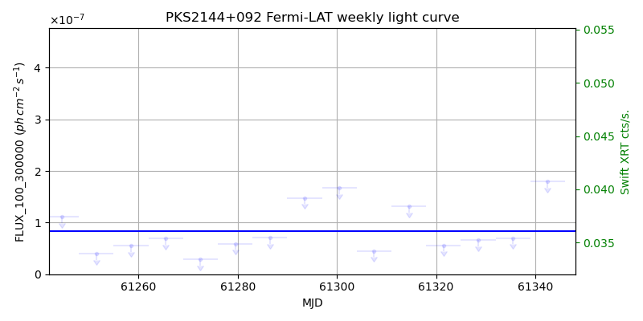
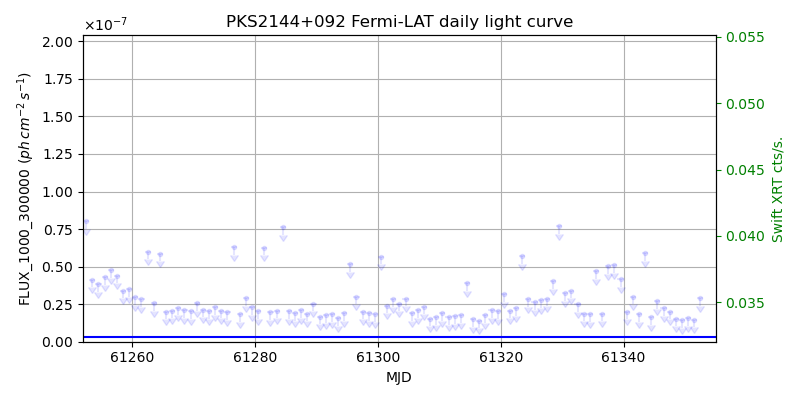
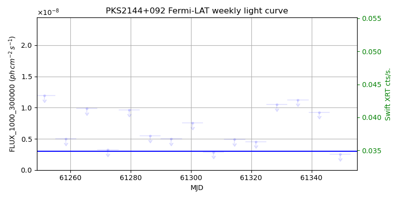

LAT Lightcurve site: https://fermi.gsfc.nasa.gov/ssc/data/access/lat/msl_lc/source/PKS_2144p092
Swift site: https://www.swift.psu.edu/monitoring/source.php?source=PKS2144+092
NED: Query
Time of last update of this page: UT: 2026-11-13 16:28 (MJD: 61357.687)
| Property | Value |
|---|---|
| R.A. | 21:47:10.08 |
| Dec. | 9:29:45.6 |
| z | 1.113 |
| 3FGL SpectrumType | LogParabola |
| 3FGL PL Index | |
| 3FGL Flux_100_300000 | 8.37e-08 1 / (s cm2) |
| 3FGL Flux_1000_300000 | 3.03e-09 1 / (s cm2) |
| 3FGL Flux >200 GeV | 1.45e-13 1 / (s cm2) |
| 3FGL Extrap. Crab >200 GeV | 0.00 |
| 3FGL Flux After EBL Absorption >200GeV | 1.90e-15 1 / (s cm2) |
| 3FGL EBL Crab Fraction >200GeV | 0.00 |

| MJD | dMJD | Flux | dFlux | Frac3FGL | FracCrab>200GeV | EBLFracCrab>200GeV |
|---|---|---|---|---|---|---|
| 61348.50 | 0.50 | 1.01e-07 | 0.00e+00 | 0.00 | 0.00 | 0.00 |
| 61349.50 | 0.50 | 1.95e-07 | 0.00e+00 | 0.00 | 0.00 | 0.00 |
| 61350.50 | 0.50 | 2.42e-07 | 0.00e+00 | 0.00 | 0.00 | 0.00 |
| 61351.50 | 0.50 | 3.88e-07 | 0.00e+00 | 0.00 | 0.00 | 0.00 |
| 61352.50 | 0.50 | 3.70e-07 | 0.00e+00 | 0.00 | 0.00 | 0.00 |

| MJD | dMJD | Flux | dFlux | Frac3FGL | FracCrab>200GeV | EBLFracCrab>200GeV |
|---|---|---|---|---|---|---|
| 61321.50 | 3.50 | 5.58e-08 | 0.00e+00 | 0.00 | 0.00 | 0.00 |
| 61328.50 | 3.50 | 6.62e-08 | 0.00e+00 | 0.00 | 0.00 | 0.00 |
| 61335.50 | 3.50 | 6.99e-08 | 0.00e+00 | 0.00 | 0.00 | 0.00 |
| 61342.50 | 3.50 | 1.79e-07 | 0.00e+00 | 0.00 | 0.00 | 0.00 |
| 61349.50 | 3.50 | 5.67e-08 | 0.00e+00 | 0.00 | 0.00 | 0.00 |

| MJD | dMJD | Flux | dFlux | Frac3FGL | FracCrab>200GeV | EBLFracCrab>200GeV |
|---|---|---|---|---|---|---|
| 61348.50 | 0.50 | 1.54e-08 | 0.00e+00 | 0.00 | 0.00 | 0.00 |
| 61349.50 | 0.50 | 1.44e-08 | 0.00e+00 | 0.00 | 0.00 | 0.00 |
| 61350.50 | 0.50 | 1.58e-08 | 0.00e+00 | 0.00 | 0.00 | 0.00 |
| 61351.50 | 0.50 | 1.48e-08 | 0.00e+00 | 0.00 | 0.00 | 0.00 |
| 61352.50 | 0.50 | 2.91e-08 | 0.00e+00 | 0.00 | 0.00 | 0.00 |

| MJD | dMJD | Flux | dFlux | Frac3FGL | FracCrab>200GeV | EBLFracCrab>200GeV |
|---|---|---|---|---|---|---|
| 61321.50 | 3.50 | 4.55e-09 | 0.00e+00 | 0.00 | 0.00 | 0.00 |
| 61328.50 | 3.50 | 1.05e-08 | 0.00e+00 | 0.00 | 0.00 | 0.00 |
| 61335.50 | 3.50 | 1.12e-08 | 0.00e+00 | 0.00 | 0.00 | 0.00 |
| 61342.50 | 3.50 | 9.24e-09 | 0.00e+00 | 0.00 | 0.00 | 0.00 |
| 61349.50 | 3.50 | 2.54e-09 | 0.00e+00 | 0.00 | 0.00 | 0.00 |
--------------------------------------------------------- Using user-supplied coords: 21:47:10.08 9:29:45.6 2000 --------------------------------------------------------- FLWO UT night of: 2026-11-14 Local Sid. @ Midnight: 03:09 Sunset (-15.0) (local, UT): 18:35 01:35 Sunrise (-15.0) (local, UT): 05:42 12:42 Moonrise (local, UT): Moonset (local, UT): 20:50 03:50 Moon phase: 0.22 --------------------------------------------------------- AzTime LSID UT Obj_el Obj_az Mn_el Mn_az Sep. --------------------------------------------------------- 18:35 21:44 01:35 67.9 177.1 20.1 218.2 54.3 19:05 22:14 02:05 67.2 196.5 16.0 223.7 54.1 19:35 22:44 02:35 64.5 213.4 11.6 228.6 54.0 20:05 23:14 03:05 60.3 226.7 6.9 233.2 53.8 20:35 23:44 03:35 55.3 236.9 2.0 237.3 53.5 21:05 00:14 04:05 49.7 245.0 -2.2 241.2 53.3 21:35 00:44 04:35 43.7 251.4 -9.0 244.8 53.1 22:05 01:14 05:05 37.6 256.9 -14.6 248.2 52.8 22:35 01:44 05:35 31.3 261.7 -20.4 251.4 52.6 23:05 02:14 06:05 25.0 266.0 -26.2 254.5 52.3 23:35 02:44 06:35 18.6 270.0 -32.1 257.5 52.1 00:05 03:14 07:05 12.2 273.9 -38.1 260.6 51.8 00:35 03:45 07:35 5.9 277.8 -44.2 263.8 51.5 01:05 04:15 08:05 0.0 281.7 -50.2 267.1 51.2 01:35 04:45 08:35 -6.7 285.7 -56.3 270.9 50.9 02:05 05:15 09:05 -12.8 290.0 -62.4 275.3 50.6 02:35 05:45 09:35 -18.8 294.7 -68.4 281.1 50.3 03:05 06:15 10:05 -24.5 299.8 -74.2 289.9 50.0 03:35 06:45 10:35 -29.9 305.5 -79.6 306.2 49.7 04:05 07:15 11:05 -34.8 312.0 -83.2 343.5 49.4 04:35 07:45 11:35 -39.3 319.4 -82.1 35.1 49.2 05:05 08:15 12:05 -43.1 327.9 -77.4 61.2 48.9 05:35 08:45 12:35 -46.1 337.4 -71.8 73.4 48.6 05:42 08:52 12:42 -46.6 339.6 -70.5 75.2 48.5 --------------------------------------------------------- Dark hours >55 deg.: 0.00